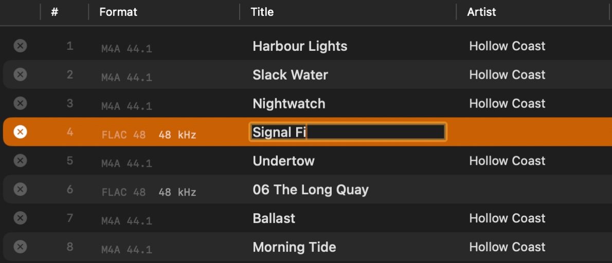
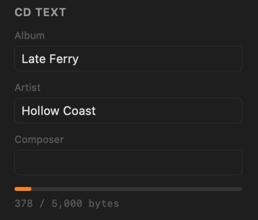

Burning CDs for CDJs
Discs that load, cue and read in the booth
A lot of clubs still run CDJs that can't play from USB, and a disc that won't read halfway through a set is a bad night. These are the choices that make a CD reliable on CDJs. None of them are complicated.
Use CD-R, not CD-RW
Every CDJ plays audio CD-R. CD-RW reflects much less light, and some older or worn decks read it badly or not at all. Use CD-RW for testing at home and CD-R for the gig.
Buy decent media and burn at a moderate speed
Cheap blank discs are where most read errors start. A recognised brand costs little more. Burning at the drive's top speed can also leave marks the laser has more trouble reading, especially on older decks, so pick a moderate speed from Pregap's speed menu for discs that matter. It adds a couple of minutes.
Put track markers where you'll cue
A CDJ can only jump straight to the start of a track. If a mix is one 70-minute file, you can't skip to the next tune.
- Split the mix into one file per tune before burning, or add the tracks individually.
- Leave every gap at zero, which is Pregap's default. The disc then plays straight through as one continuous mix, with a marker at every tune.
- Each track must be at least four seconds long, a limit set by the CD standard. Pregap's preflight flags any that are shorter.
Fill in CD-Text
CDJs that read CD-Text show the artist and title on the deck's display, which beats "Track 07" when you're choosing the next tune in a dark booth. In Pregap it fills in from your files' tags, and you can edit any title in place. It is written during the burn, so it has to be right before you start.


Know the limits
- About 80 minutes of audio on a standard blank CD-R. Pregap's disc bar shows how much of the disc the running order uses.
- 99 tracks is the most an audio CD can hold.
- Audio CDs only. Older CDJs can't play MP3 data discs at all, and many newer ones don't show tags from them. A standard audio CD works on every CDJ ever made.
Before the gig
- Play the disc through on a CDJ, or at least skip through every track.
- Write on the label side with a soft CD marker. A paper sticker can make the disc spin unevenly.
- Carry a second copy.